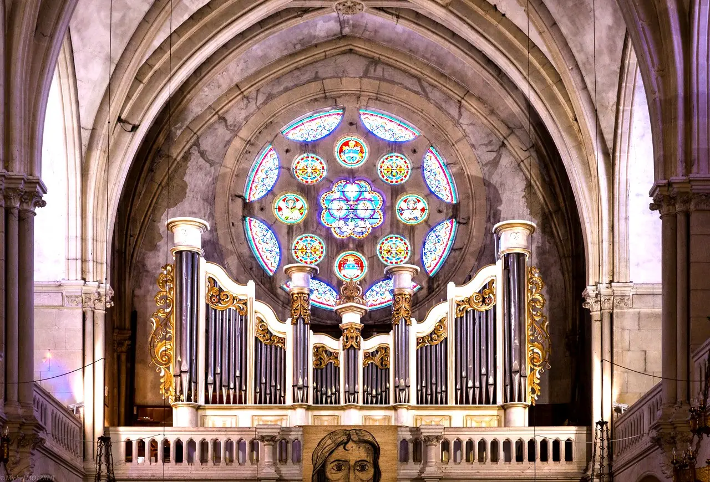

Faire vivre l'orgue
Entretenir et étendre le grand orgue de Rians pour qu'il serve les cérémonies et les concerts.
Des passionnés, un grand orgue construit à Rians et l'envie de le partager.
Future Organ est l'association des Amis de l'orgue de Rians : elle fait vivre un grand orgue construit bénévolement et soutient la facture d'orgues d'aujourd'hui.
Le grand orgue de l'église de Rians est né de la passion d'un organiste ingénieur, Pascal Leray, soutenu par son épouse Anne-Marie. Conçu, construit et financé sans subvention, c'est un orgue neuf, expressif, qui marie tuyaux réels et électronique.
L'association reçoit des dons (notamment ceux des mariés) pour construire, étendre et entretenir cet orgue, et pour aider à rénover ou construire d'autres orgues, dans des églises comme chez des particuliers.
Date de création, numéro RNA et siège social : à compléter (informations absentes de l'ancien site).

Entretenir et étendre le grand orgue de Rians pour qu'il serve les cérémonies et les concerts.
Récitals et visites gratuits chaque dimanche, conférences, démonstrations.
Partager une technologie économique pour bâtir ou rénover des orgues, y compris transportables.